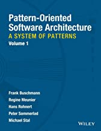

Паттерны проектирования: наблюдатель, посетитель, издатели/подписчики
2020-05-26
Наблюдатель
Определение
Паттерн Наблюдатель определяет отношение "один-ко-многим" между объектами таким образом, что при изменении состояния одного объекта происходит автоматическое оповещение и обновление всех зависимых объектов.
UML диаграмма класса и последовательности

Наивная реализация
class Observer { public: void update() = 0; }; class Observable { std::vector<Observer *> m_observers; public: void attach(Observer *); void detach(Observer *); void notify() { for (auto o : m_observers) o->update(); } };
Пример
boost::signals2::signal<void()> sig; struct Observer { void operator()() const; }; auto c = sig.connect(Observer()); c.disconnect();
Посетитель
Определение
Представляет операцию, которую надо выполнить над элементами объекта. Позволяет определить новую операцию, не меняя классы элементов, к которым он применяется.
UML диаграмма класса и последовательности

Наивная реализация
class Element { public: void accept(Visitor *v) { v->visit(this); } }; class Visitor { public: void visit(Element *) = 0; };
Двойная диспетчеризация/Double dispatch
Механизм, отправляющий вызов функции к конкретным реализациям, зависящим от типов объектов, участвующих в вызове, известных на этапе выполения.
Пример
Издатель-подписчик
Пример
Ссылки
|  |